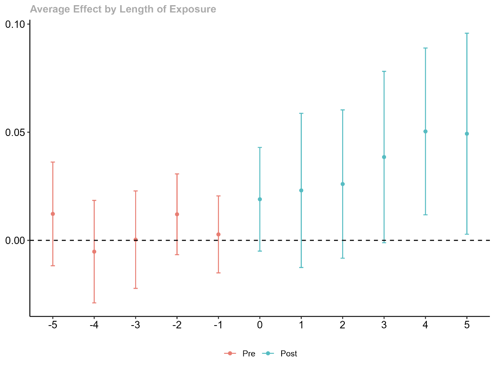
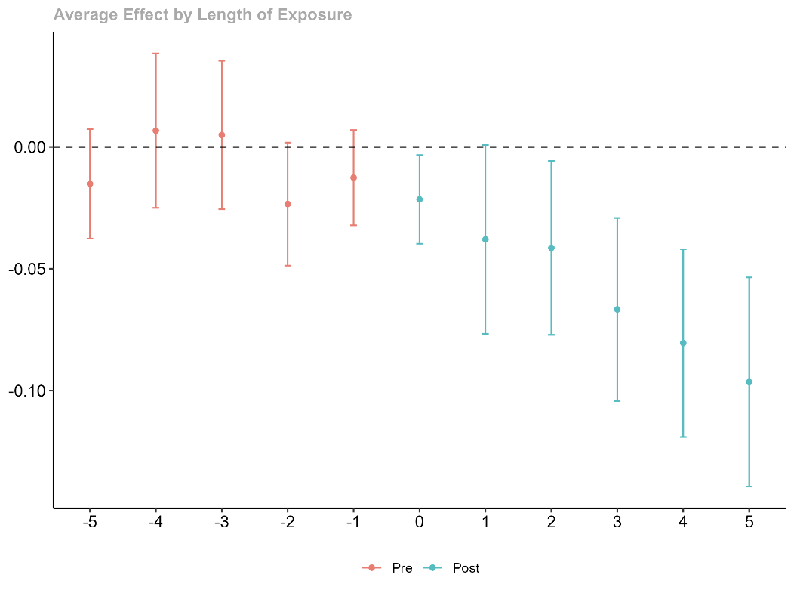
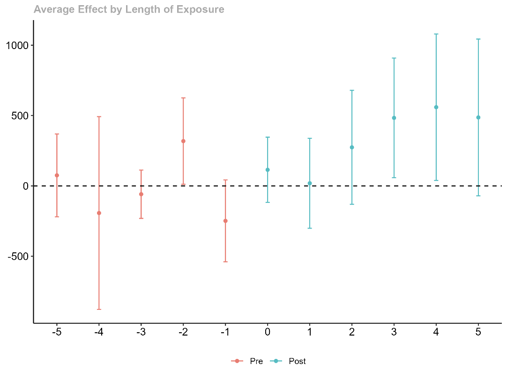
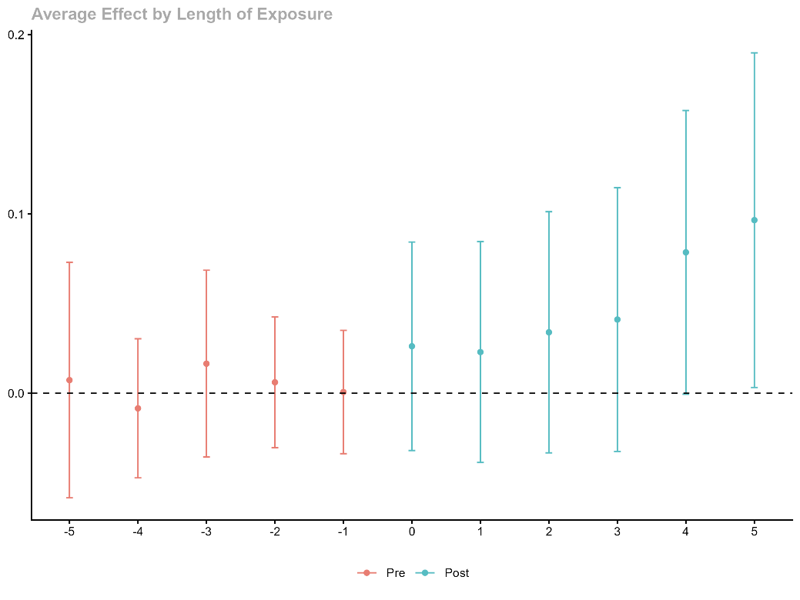
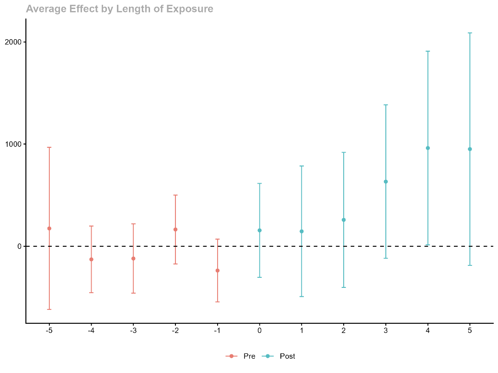
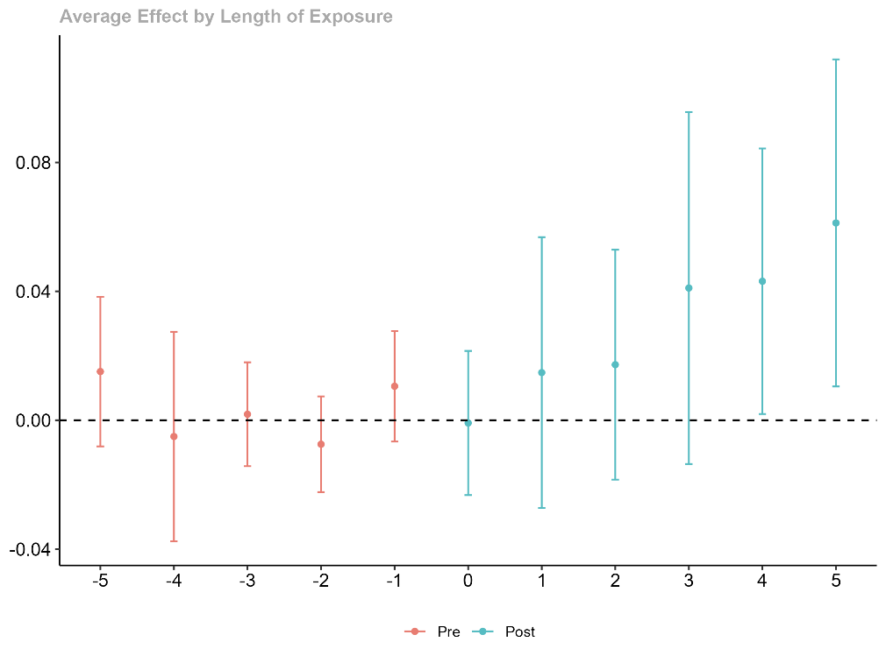
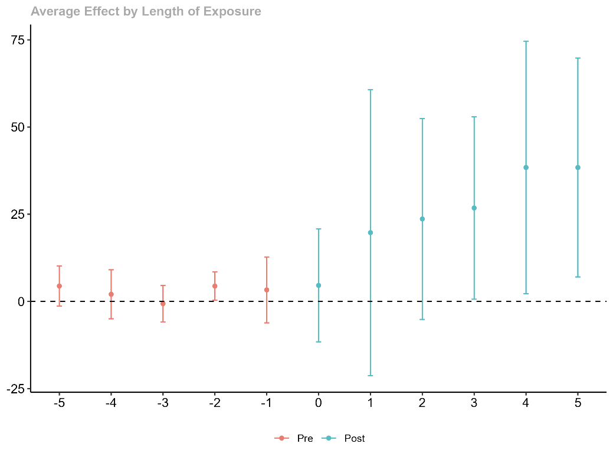

Painel de resultados
O que acontece com o emprego e a remuneração das empresas depois que elas recebem crédito à inovação — comparando com empresas parecidas que não receberam.
Os gráficos nas outras abas mostram o efeito estimado do recebimento de crédito à inovação sobre diferentes características das empresas beneficiárias, ano a ano, comparando com empresas que não receberam crédito. A técnica usada (diferença em diferenças) segue a lógica de um experimento: compara a diferença entre os dois grupos de empresas antes e depois do crédito.
Em cada gráfico, o eixo horizontal marca os anos antes (negativo) e depois (positivo) do primeiro crédito recebido — o zero é o próprio ano do recebimento. Os pontos vermelhos (antes do crédito) devem ficar perto de zero e sem tendência clara — isso garante que a comparação é válida. Os pontos verdes (depois do crédito) mostram o efeito estimado: quando a barra vertical (intervalo de confiança) não cruza a linha pontilhada do zero, o efeito é estatisticamente significativo.
Resultado geral — todas as empresas beneficiárias, das 4 fontes juntas.

Depois de receber o crédito, as empresas passam a ter uma proporção maior de trabalhadores com ensino superior completo. O efeito cresce com o tempo e se torna significativo a partir do 4º ano, chegando a cerca de 5 pontos percentuais.
Resultado geral — todas as empresas beneficiárias, das 4 fontes juntas.

Essa mudança de perfil vem principalmente da redução dos trabalhadores com ensino médio completo — o grupo que mais perde espaço, com queda de até 10 pontos percentuais no 5º ano.
Resultado geral — todas as empresas beneficiárias, das 4 fontes juntas.

As mulheres nas empresas beneficiadas passam a ganhar, em média, cerca de R$ 500 mais que as mulheres em empresas parecidas sem crédito — efeito que aparece a partir do 3º ano.
Só as empresas que receberam crédito das duas instituições mineiras — pra comparar com o resultado geral.

Quando olhamos só o crédito estadual, o efeito sobre a qualificação é ainda mais forte — cerca de 10 pontos percentuais, o dobro do resultado geral.
Só as empresas que receberam crédito das duas instituições mineiras — pra comparar com o resultado geral.

O aumento salarial das mulheres também é maior no crédito estadual — em torno de R$ 1.000, o dobro do efeito médio geral. No crédito federal isolado, esse efeito não aparece com força.
Os dois setores que mais recebem crédito reagem de formas diferentes.

No setor de Indústria de Transformação — o maior receptor de crédito — o ganho de qualificação vem por substituição: a empresa troca parte dos trabalhadores menos qualificados por gente com ensino superior, sem aumentar o total de funcionários.
Os dois setores que mais recebem crédito reagem de formas diferentes.

Já no setor de Informação e Comunicação, o padrão é outro: a empresa contrata mais gente qualificada sem demitir ninguém — o efeito aparece no aumento do número total de trabalhadores, chegando a mais de 30 contratações adicionais.